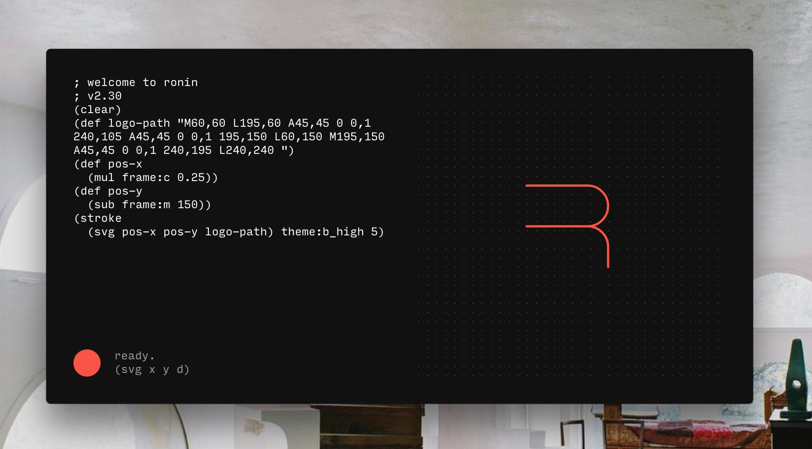

philosophy
our philosophy
We build software following these rules:
offline first
We build and design our software to work offline first. They will never need online resources to function properly, they will always be bundled with enough documentation to be repaired without our help. Our software will never be released behind any form of Digital Rights Management.
past proofing
We build simple tools to tackle specific tasks. We release builds and documentation to support a wide range of platforms, from native applications to terminal tools. We target 20 years old hardware as to encourage recyclism and discourage the consumption of fashionable electronics.
freedom
We release free and open-source programs so that they can be studied, inspected and repaired by anyone, anywhere. We build for GNU/Linux first.